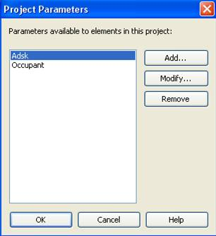
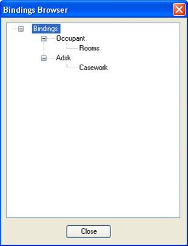

Retrieving Project Parameters
In between the series of background information from Scott's Autodesk University presentation on analysing building geometry, let's have a quick look at a completely different question, on retrieving all shared parameters from a Revit project. Other posts related to shared parameters are listed at the end of our discussion of RDBLink Export.
The following solution comes from a case handled by Saikat Bhattacharya.
Question: How can I programmatically retrieve the set of project parameters added to a given Revit project?
Answer: Shared parameters are bound to certain categories. You can access all the bound parameter definitions from the BindingMap returned from the Document.ParameterBindings property. Each project parameter shown in the Settings > Project Parameters dialogue represents an entry in this mapping. To see more on how this works, you can refer to the VB.NET BrowseBindings SDK sample residing in the SDK samples folder. It illustrates the usage of the ParameterBindings property by retrieving the ParameterBindingsMap and looping through all entries in the map to display all parameter definitions and bindings in a tree view.
Here are the project parameters as displayed in the user interface:

This is the display generated for the same project through the Revit API by the BrowseBindings SDK sample:

Many thanks to Saikat for handling this case!